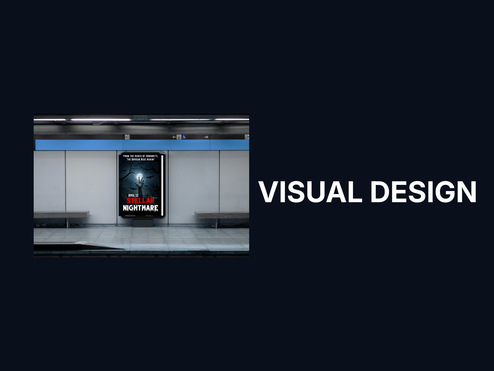
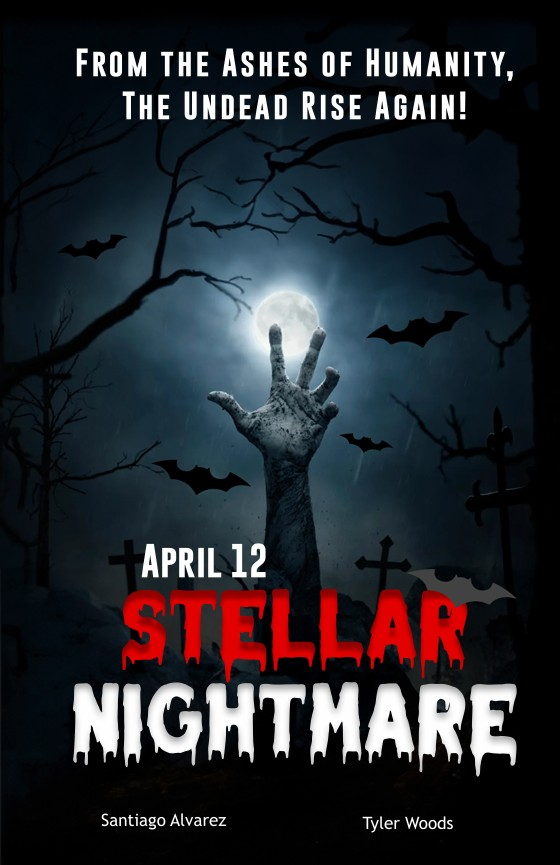

← Back to selected work
Visual Design
Stellar Nightmare
Graphic designer for a conceptual cinematic poster.

A conceptual poster focused on atmosphere and hierarchy.
This visual design project explores a cinematic sci-fi/horror direction through dramatic contrast, typography and compositing.
Final poster

Design focus
Visual storytelling, typography hierarchy, mood, contrast, color and lighting.